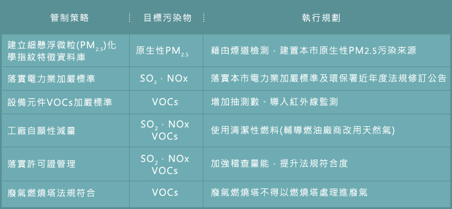
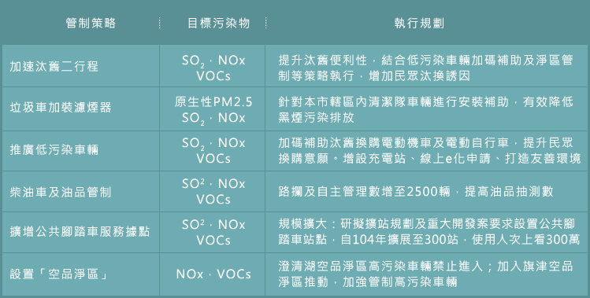
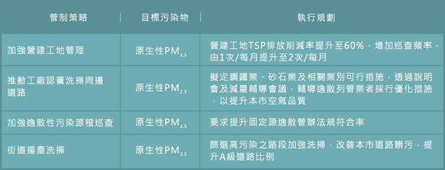
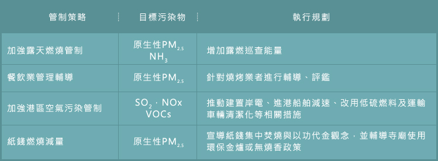

高雄市PM2.5管制策略
高雄市為國內工業重心，其轄區包含了石化、鋼鐵等高污染產業，其大小的加工出口區及工業區也林立於此，如高雄加工出口區、楠梓加工出口區、林園工業區、大發工業區、鳳山工業區、仁大工業區等，再加上人口車輛與地理因素，使得高雄空氣品質不良。因此目前高雄市環保局訂定了4大方向作為改善目標，
固定污染源管制
藉由確實許可審查，落實法規設置操作標準，並透過定期及不定期現場查核及稽核，以杜絕不法及異常排放。
表1 固定源管制策略執行規劃表

移動污染源管制
利用汽機車定檢篩除車輛，同時加強巡查管制提高定檢率，並鼓勵民眾檢舉高污染車輛，以達到汰舊換新之效果，並另推動公共運輸及綠色(低污染) 系統車，降低運輸排放量。
表2 移動源管制策略執行規劃表

逸散污染源管制
針對營建工地、列管逸散源、開發翻修等工程執行稽巡查及輔導評鑑，並召開說明會請營建業主及承商與會以執行之相關防制設施經驗傳授及供各營建業主及承商參考。另對於道路揚塵及河川揚塵部分，除持續進行洗街工作外，河岸透過監測調查模擬後，通知相關單位進行河川裸露改善。
表3 逸散源管制策略執行規劃表

綜合性改善目標
對於高雄港部分加強巡查，減少溢散及亂排行為;對於餐飲業者油煙排放除了以宣導方式維護，同時透過陳情等管道降低不良觀感; 對於露天(紙錢)燃燒，除了對廟宇及民眾宣導空氣改善觀念外，並以減量或集中焚燒達到改善效果。
表4 綜合性管制策略執行規劃表

除了這4大方向外，高雄市也針對了有害空氣污染物調查作業及細懸浮微粒(PM2.5)來源檢測與比對分析，透過以上方式進而掌握高雄市有害空氣品質現況。
")